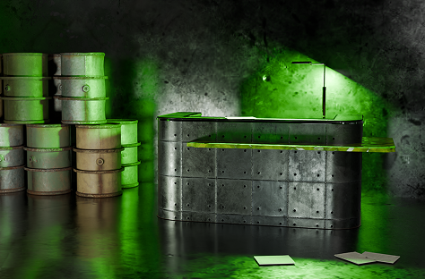
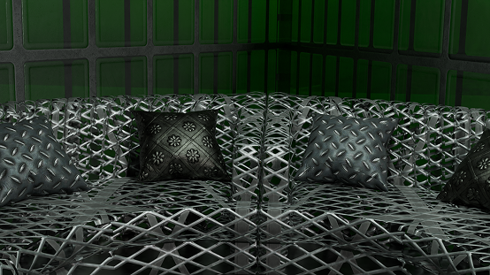
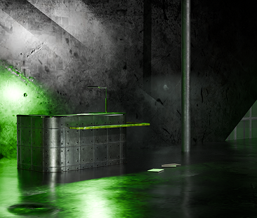

О нас
Ресторан находится в глухой забытой местности, где раньше когда-то была жизнь.
После аварии на химическом заводе, сопровождавшейся выбросом радиоактивных
веществ, город пришлось срочно эвакуировать. В заброшенных, ржавых домах
поселились мухоловки и выстроили свой мир.


Ресторан распологается в здании отеля для мухоловок. при в ходе размещен
рецепшен для регистрации посетителей и зона ожидания с удобным диваном.
Сам ресторан находится слева за железной дверью.


